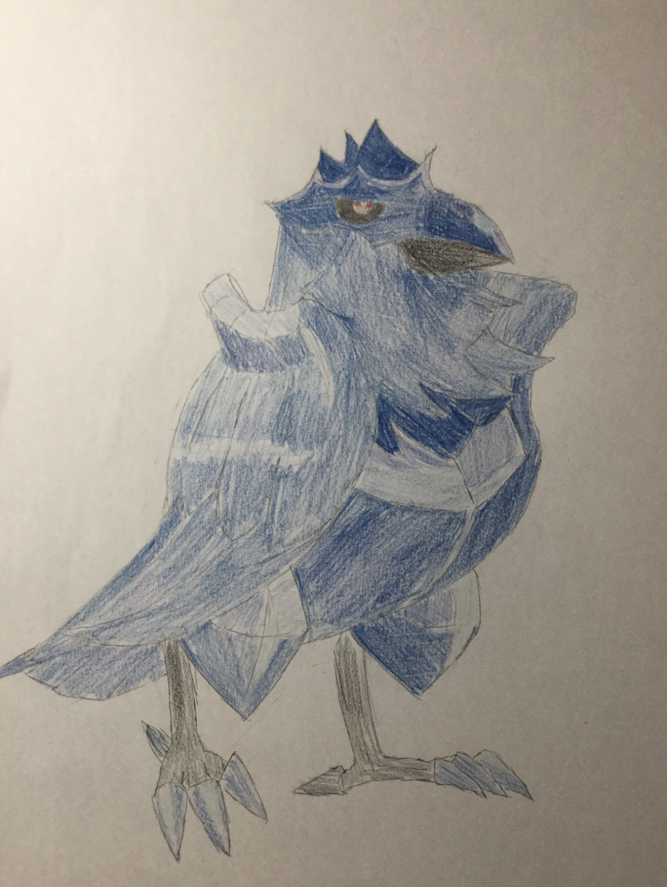
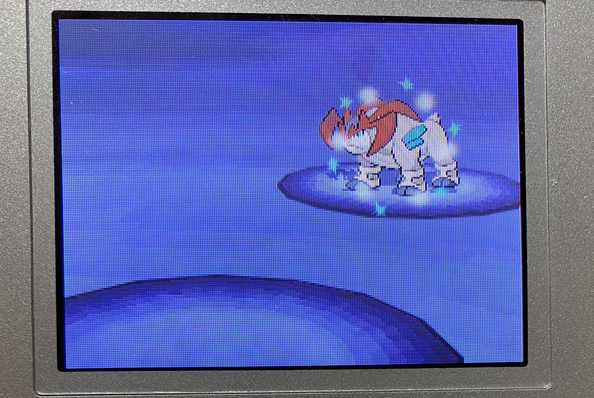

自己紹介
そーしん


役職：備品管理
電子部品の管理とwebサイトの作成を行う役職です。僕は両方できません。
所属班:頑張れC++
班では主に競技プログラミングの問題を解いたりしています。
他には、最近セキュリティに不可欠な暗号などについて班で調べていますが、ちんぷんかんぷん過ぎて悶絶してます。
好きな言語
- Java...初めて覚えたプログラミング言語で、今でも1番使っている気がします。
- C...ポインタが好きで嫌いです。
趣味
- 競技プログラミング(AtCoderとか)...ハマる人はハマります。ぜひ1度やってみてください。
-
ポケモンの乱数調整...乱数生成処理の穴を利用して、色違いのポケモンを量産できたりします。(上の写真はポケモンBWで乱数調整によってテラキオンを意図的に色違いにしています。)
電工研に入った理由
話が合う人が多そうだったからです。今まで知らなかったことを先輩方や友達に教えてもらっていて、とても楽しいです! ちなみに理解したような顔して全く理解してないことが多々あります。
よろしくお願いします!